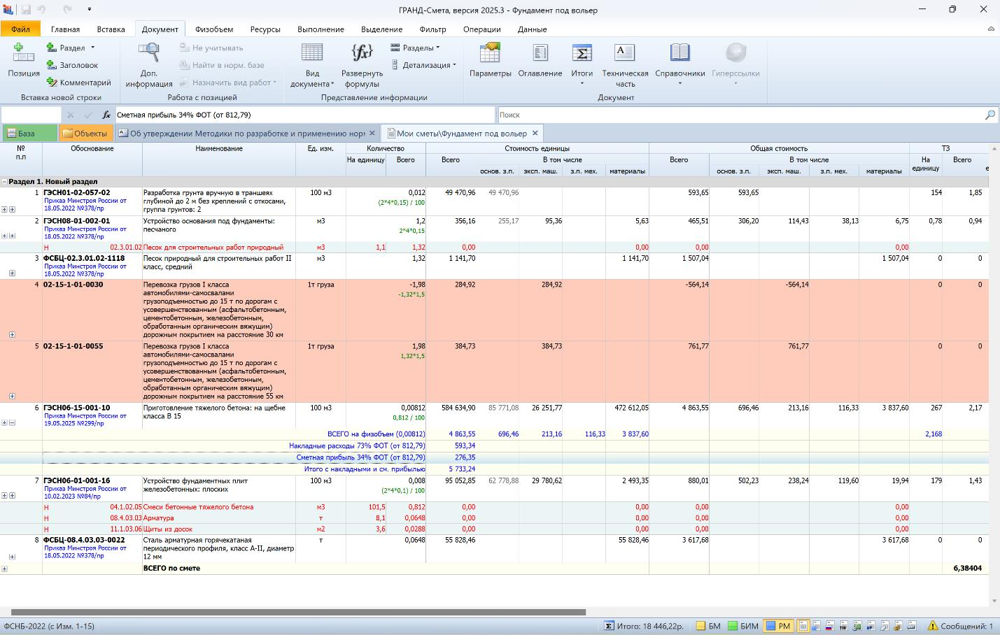

Сметная прибыль

Ольга Баранова
Сметная прибыль – это сумма денежных средств, которая предназначена для финансирования отдельных статей расходов строительной организации.Они направлены на развитие производства, улучшение социальных условий и материальное поощрение сотрудников. Величина прибыли рассчитывается отдельно для каждого типа работ в процентном соотношении от фонда заработной платы.

Сметная прибыль учитывает следующие затраты:
- средства направленные на покупку, обновление (реконструкцию) объектов основных фондов либо восстановление производства (включая внедрение передовых технологий, модернизацию технологических процессов, приобретение новых, более качественных и эффективных средств производства и другие подобные расходы).
- средства направленные на материальное поощрение сотрудников (расходы, не входящие в расчет заработной платы и накладных расходов предприятия, направленные на предоставление материальной поддержки к ежегодному отпуску, организацию физкультурно-оздоровительных мероприятий, оформление ДМС, выдачу путевок, проведение спортивных соревнований и экскурсионных поездок, закупку праздничных подарков, выплату единовременных премий по случаю юбилея, свадьбы и прочих аналогичных случаев).
- средства связанные с увеличением объема оборотных денежных средств на счетах организации. Они предназначены для покрытия будущих расходов, которые возникают в ходе выполнения подрядных обязательств (включают расходы на уплату процентов по кредитам и займам, привлеченным для закупки материалов, изделий и конструкций в процессе реализации договорных обязательств, а также другие похожие затраты).
- средства, которые направлены на уплату налога на прибыль организаций, установленного главой 25 Налогового кодекса Российской Федерации.